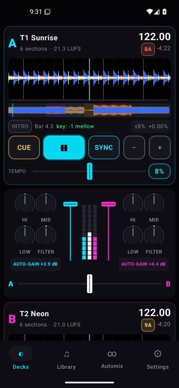
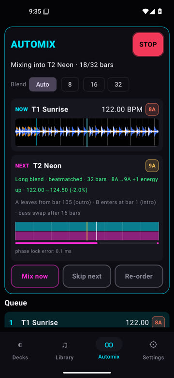

Android · Round 1
DJ Automix
An EDM auto-mixer for your phone. It studies every track (tempo, key, beats, intro, breakdown, build, drop, outro) and mixes them on the phrase, beat-matched and in key.
Install it
- On your Android phone, tap Download the app below.
- If the phone asks, allow installs from your browser or Files app. This is normal for an app that is not on the Play Store.
- Open the downloaded file, tap Install, then Open.
- In the app, go to Library and tap Scan device (or Add folder). Wait for the tempo and key to appear, then open Automix and tap Start.
Version 0.1.3 · 6.1 MB · Android 8.0 or newer
SHA-256 456c89b5704846307d27c145d04820586bc40a8b8cc42f3eb88918d18ad606c8
What's in this version
- Track analysis: tempo to 0.01 BPM, key (Camelot), beat grid, sections, energy, loudness. Saved, so it only happens once per track.
- Two decks with colour waveforms, sync, tempo, pitch bend, cue, 3-band EQ (DJM-style or full-kill), filter, auto-gain, crossfader.
- Automix: harmonic order, phrase-aligned 8/16/32-bar blends, bass swap, filter fade, tempo glide. Shows the next transition before it happens.
- 0.1.3: Clear library (files stay on the phone; adding them again is instant). Live drag-to-reorder in the Automix queue. Crossfader snaps to a centre sweet spot; double-tap also resets it.
- 0.1.2: Smart shuffle gives a new compatible order each time you press it; Re-order still picks the single best path.
- 0.1.1: the next track no longer comes in with minutes still left; mix-out stays in the last part of the track. Shuffle, drag, and remove on the Automix queue.
- Coming next: keylock, hot cues, loops, effects, headphone cue, recording, sampler.

